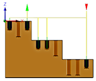
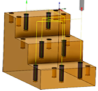

Vue isométrique de faible profondeur
Vue avant de faible profondeur
Cochez cette case afin de sélectionner tous les perçages qui partagent la même distance entre les parties supérieure et inférieure que la fonction sélectionnée.
Exemple: Vous pouvez utiliser cette option pour distinguer les perçages tauraudés de 6 mm des perçages lisses de profondeurs différentes.
Perçages de 6 mm de faible profondeur sélectionnés
|
 |
Vue isométrique de faible profondeur |
Vue avant de faible profondeur |
Perçages de 6 mm de grande profondeur sélectionnés
 |
 |
Vue isométrique de grande profondeur |
Vue avant de grande profondeur |